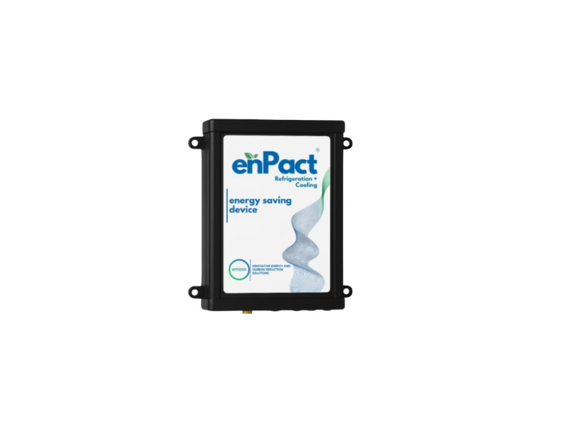

Refrigeration & Cooling Optimisation
Reduces compressor and cooling energy on suitable commercial refrigeration and HVAC systems through operational tuning and targeted interventions.
Typical sites: restaurants, hotels, food manufacturing, retail with significant cold-chain load. Assessed during an Onsite Discovery Assessment.